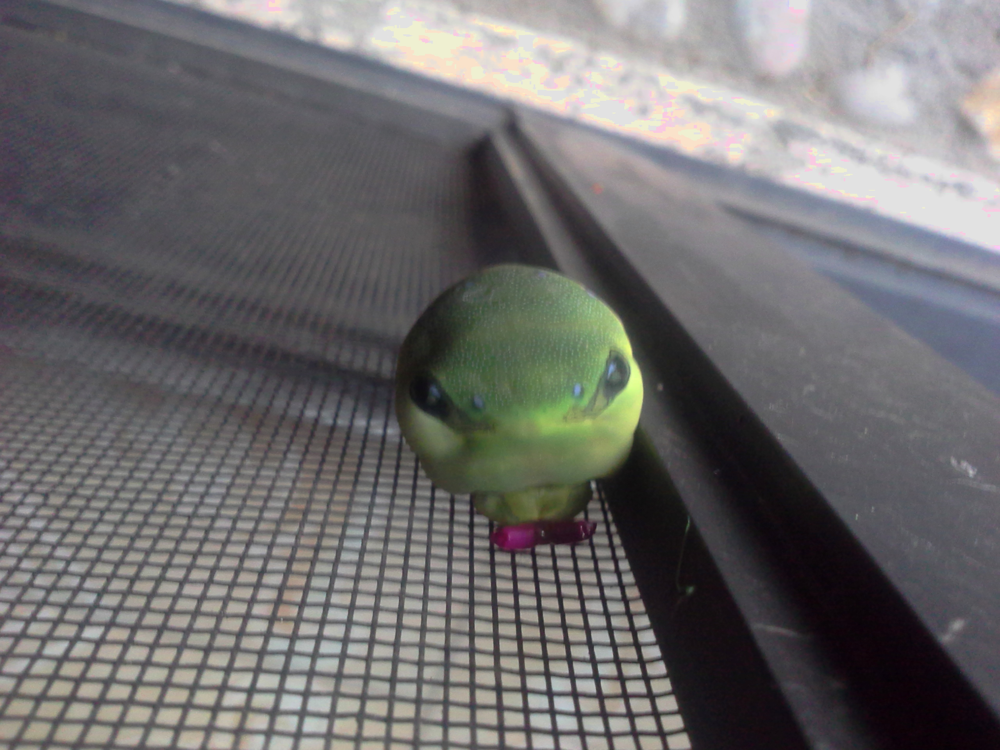

Programmer's Guide to NCurses

Go, que no es un lenguaje nuevo (ya tiene sus añitos) carece de librerias
nativas para desplegar guis, asi como tuis… bueno esto ultimo no es del todo
cierto, pues cuenta con unas pocas librerias nativas para mostrar graficos por
la terminal, solo queeee, estan muy verdes, me explico, tienes la habilidad de
modificar los caracteres
, conocer la dimencion de la terminal, leer la
entrada del rator (y teclado) y poco mas, ni funciones para desplegar texto, ni
scroll, ni todo el arsenal de funciones que por ejemplo, posee ncurses.
Asi que lo mas logico fue cambiar de lenguage comenzar la escritura de
una nueva libreria para hacer cosas en la terminal, con casinos y colegialas
japonesas!
Da la casualidad, que tenia a la mano el libro Programmer’s Guide to Ncurses de un tal Dang Gookin y ya que estaba en la labor hago una breve reseña del asunto (y otras cosas)
Por cierto si nos sabes que es ncurses, puedes visitar un post relacionado aqui
comor?
El libro asume que tienes conocimientos de programacion, especificamente programacion en C, que es el lenguaje con el que esta escrita la libreria ncurses, aunque tambien podrias utilizar C++.
Tambien, que estas o vas a programar bajo un entorno *nix, con un arsenal formado por un terminal (con bash), editor y un compilador (gcc), aunque esto queda mas como una recomendacion. Aun asi se toma un par de secciones para enseñar lo mas basico antes de iniciar. Quedando como asignacion a quien tome el material, profundizar en el uso de estas herramientas
Una vez aclarado el tema, la estructura de la lectura es: plantear/mostrar unas cuantas funciones de la libreria, dejar el codigo fuente de un programa con dichas funciones y analizar un poco el asunto.
La dificultad
aumenta de forma incremental, a medida que se van
introduciendo los conseptos propios de ncurses (estos ultimos son suficientes
para hacerse de una idea de como esta implementada la libreria, o al menos sirve
de guia para implementar una propia) pasando por mostrar texto, leer la entrada
del teclado, refrescar la pantalla, ventanas, color, etc.
Si bien todo es muy ameno, con un lenguaje relajado y no existen retos que puedan frustrar a quien inicia, lamentablemente el asunto no pasa de ser un paseo por la libreria. Puedes olvidarte de tener el codigo para construir una interfaz molona, menos, fantacear con programar un videojuego o un editor de texto.
Digo el material (pdf) son 570 paginas, aunque tiene truco, de esas paginas lo
didactico representa el 35% con letra grande y un monton de listados (esto esta
bien), el resto es una compilacion
de todas las funciones, con una
pequeña explicacion, su formato, notas y ejemplos, muy del estilo de las paginas
man (sospecho que con un pequeño retoque). Llega a dar la imprecion que solo fue
hecho para sacar algunas monedas, algo lamentable, pues aparte de una
pequeña guia oficial de la libreria, este es el unico material de consulta sobre
el tema y encima los dos (estaban) en ingles.
Entonces? es bueno para conocer los fundamentos de ncurses, salir de algunas dudas y como material de referencia. Si deseas profundizar y ejemplos mas elaborados, necesario acudir a la documentacion oficial de la libreria (NCURSES Programming HOWTO).
Prison Blues
a bbeeee, boooohoo, hooo, beeep, beibe. Hace mucho, mucho tiempo, mientras experimentaba con org mode, el sujeto de este post sirvio de cobaya en la busqueda del sistema de documentacion definitivo(?), tambien como excusa para traducir cosas y aprender (o no) un poco ingles de forma salvaje.
Por aquel tiempo imaginaba que prodria finaciarme adaptando libros a formato digital, cobrando en $dolares. El asunto no fue muy bien e incluso fui llamado ladron, je, quiza con razon, como saberlo. Lo intente un par de veces mas enviando el material a algunas editoriales sin resivir respuesta, en fin.
Al menos, sirvio para conocer los limites de org-mode, que cayo de mi gracia, al igual que ncurses, por cierto la hoja de estilos, no esta muy fina y lo referente al español, solo fue revisado mientras lo iba leyendo.
Org-mode, tiene pocos estilos de resaltado y sus estructuras no estan pensadas para maquetar documentos extensos, asi que alguna seccion puede fallar, ademas la traduccion esta en bruto sobre el material original comentado. Se puede exportar del fuente, pero org es lento y puede fallar, por aquel tiempo un bug en alguna cosa hacia que emacs se colgara un rato y consumiera 3gb de ram el solito, motivo por el cual tuve que expardir la memoria a 8gb. No se por que sera pero no se resalta en colores el codigo fuente.
sobre ncurses
Partiendo del principio de que ncurses es heredero de una libreria que permitia mayor control sobre un terminal, con hardware y software primigenios de limitadas capacidades, unica y exclusivamente para manejar texto codificado en ASCII… fue perfecto!
Ahora bien, en el precente con equipo que es capaz de mostrar mas colores que el arcoiris, emuladores de terminal sobre entornos graficos y mas caracteres que chinos… es limitado.
No se mal entienda un terminal es para ser un terminal, su deber es ser
eficiente desplegando texto, no tiene sentido dedicar 4 bytes por caracter para
almacenar colores, ni 2 bytes para atributos (negrita, italica, subrayado, etc),
menos tener la capacidad de modificar los caracteres a nivel pixel (para generar
imagenes), como tampoco tener velocidades de refresco de pantalla mayores a 10 o
20 ciclos, o contar con modos graficos
, soporte para mandos, o midi,
o que la lectura de teclado y raton fuesen librerias independientes
Pero por que tener la necesidad de averiguar si el terminal puede hacer esto o aquello, si tiene o no soporte para colores (8, 16, 256, etc), no puede haber un jodido estandar que me asegure poder desplegar interfaces lizergicas basadas en texto, con midis y pad, si o si?
La documentacion y ser software libre son importantes, tanto como lo es para mi
el contar con codigo para subnormales (como yo), quiza es lentitud mia el
encontrar indescifrable el codigo de Ncurses, seran las macros? los guiones
bajos?… misterioso (ademas de digno de respeto) que un solo individuo lleve el
desarrollo de esta libreria desde hace varios años (que hace poco libero la
vercion 6 (sin aparentes cambios)), los motivos, son un enigma digno de mayor
analisis, te ha pasado actualizar la pantalla con algun wrefresh y no ver
cambios?
(narrador) Y asi mientras nasciiboy se cuestionava sobre el pasado, presente y futuro de las terminales, otro dia mas llegaba a su fin en la isla de los heroes del viento, no dejen de sintonizar la proxima entrega (/narrador)